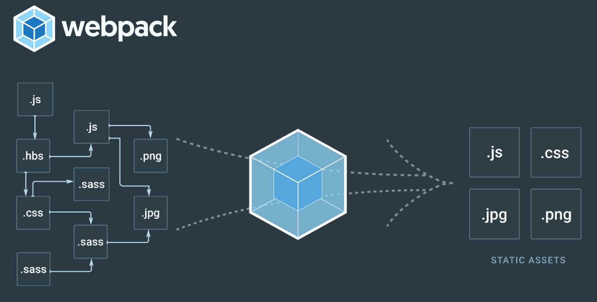

Webpack 개념잡기

Web front-end build tool에는 여러 가지가 있다. 이러한 build tool은 단순히 소스를 묶고 컴파일하고 압축하는 단순한 형태에서 벗어나 하나의 기술로 자리잡혔다. 이 build tool들을 활용함으로써 우리가 진행하는 프로젝트에 엄청난 시너지를 안겨 줄 수 있다. 수많은 build tool 중 이 포스트에서는 떠오르는 build tool인 webpack에 대한 소개와 프로젝트를 진행하면서 왜 Build Tool이 필요한지 포스팅하겠다.
Build Tools
Build는 서버 사이드에서만 사용하는 것이 아닌 Web Front-End에서도 필수이다. JavScript와 CSS를 축소하고 단위 테스트도 수행하며 프로젝트에 필요한 자산들(Image, Font)을 효율적으로 관리할 수 있을 뿐만 아니라 패키지화까지 진행할 수 있다. 이러한 사항들로 인해 결국 해당 프로젝트의 성능과 개발의 편의, 그리고 개발 속도가 향상될 수 있다. 물론 build를 실행하지 않고 직접적으로 시스템 파일을 Linking하여 사용할 수도 있겠지만 우리는 언제나 Performance 대립하게 되어있다. 그럼 이 Front-End의 build tool에는 어떤 것이 있을까?
Jake
Brunch
Grunt
Gulp
Webpack
Brocolli
Cha
너무 많다. 그냥 “이런 게 있구나..”라고 기억만 하자.
그럼 왜 저 많은 build tool 중에서 Webpack을 포스팅하는 것일까? 저 build tool 중 가장 많이 사용하는 tool은 Gulp와 Grunt 그리고 Webpack이다. 이 세 가지를 비교해 볼 수는 없다. 셋 모두 훌륭한 시스템이다. 단지 NPMCOMPARE에서 Gulp와 Grunt를 비교해 보았을 때 Gulp가 좀 더 활성화되어 있는 것을 볼 수 있다. 그렇다면 Webpack은??
Webpack VS Gulp
사실 Webpack와 Gulp은 다르게 볼 수 있다. Webpack은 Package Bundler이며, Gulp는 Task Runner이다. 크게 다르다고는 할 수 없지만, 이 이유가 Webpack을 포스팅하는 이유이다. 그럼 Task Runner와 Package Bundler는 무슨 차이일까.
쉽게 말하면 Task Runner는 그저 미리 정의해 놓은 어떠한 작업을 실행하는 것이고 Package Bundler는 말 그대로 어떤 소스들을 하나의 패키지화 하는 것이다.
구글 트렌드를 통해 Gulp와 Webpack의 검색 추이를 보게 되면 처음에는 Gulp가 우세한 면을 보이지만 최근 들어 Webpack이 Gulp를 넘어서 더 우세한 것을 볼 수 있다.
이는 프로젝트 규모와 그리고 Task Runner로는 진행할 수 없는 Webpack만의 중요한 종속성 관리에 따라 변화된 것으로 보인다. 이러한 종속성 관리는 프로젝트 규모가 클수록 더 빛을 발하며 그리고 날이 갈수록 단일 웹 애플리케이션(SPA)의 확산에 따라 중요한 자리를 차지하고 있다. 이 그래프에서 우리가 유추해 볼 수 있는 또 다른 하나는 Webpack과 Gulp의 교차 지점이다. 이 기간에서는 Webpack과 Gulp를 같이 사용했다고 볼 수 있다. 물론 지금도 그렇게 사용하는 개발자도 있다. jsHint나 jsLint등의 코드 검사 도구 또는 mocha나 jasmine과 같은 테스트 도구를 Gulp를 통해 실행하고 이 후 프로젝트의 패키징은 Webpack으로 사용하는 것처럼 말이다. 하지만 Webpack에서도 Gulp와 마찬가지로 전처리 작업을 지원하면서 Webpack이 더욱 상승세를 보인다.
Webpack과 Gulp의 NPM COMPARE를 보게 되면 Gulp가 종속된 모듈수가 적고 발생 이슈가 낮지만, 전체적인 면에서 보면 현재로서는 Webpack이 좀 더 활성화가 된 것을 볼 수 있다. 그럼 먼저 간단하게 Webpack와 Gulp의 특징을 알아보도록 하겠다.
Webpack
위에서 말했듯이 Webpack은 JavaScript 애플리케이션을 위한 Package Bundler이고 목적은 종속성을 가진 애플리케이션 모듈을 정적인 소스들로 생산하는 것이다. 애플리케이션을 처리할 때 필요한 모든 모듈을 종속성 그래프로 반복적으로 작성한 다음 모든 모듈을 브라우저에서 로드 할 수 있는 하나의 Bundle로 패키지화한다. 이 외의 특징은 다음과 같다.
Webpack은 크게 Entry, Output, Loader, Plug-In 이 4가지로 나눌 수 있다.
Webpack의 장점은 이렇게 많지만 단점이라 하면 초기 구축에 대한 시간적인 비용이 많이 투자되며 Learning Curve가 길다는 점이다.
Gulp
Gulp는 Task Runner이며, Work Flow를 자동화 및 향상할 수 있는 도구이다. 개발 Work Flow에서 번거로운 작업들이나 시간적인 소모가 많이 들어가는 작업을 자동화하여 쉽게 처리할 수 있다. Gulp의 특징을 보자.
Gulp는 Webpack에 비하여 Learning Curve가 낮기 때문에 사용하기 쉬운 편이며, 코드에 대한 가독성이 좋다. 대신 Webpack과 같이 모든 모듈에 대한 종속성 관리가 이루어지지 않기에 규모가 큰 프로젝트에서 패키지화하기가 쉽지 않다. 나도 Gulp를 사용하지만 개인 오픈 소스 프로젝트를 진행하는데에는 이만한 Tool도 없다.
지금까지 우리는 Webpack과 Gulp를 알아 보았다. 전체적으로 본다면 Build Tools를 알아 본 것이다. 이번 포스팅에서는 Webpack이 기준이기 때문에 Webpack에 대해 좀 더 자세히 알아보았지만, 명심해야 할 것은 무조건 Webpack이 좋다는 것이 아니다. Gulp, Grunt 역시 훌륭한 Build Tool이다. 우리가 진행해야 할 프로젝트에 어떤 것이 더 효과적이고 필요한지를 되새김하고 그에 걸 맞는 Build Tool을 선정해야 할 것이다.
다음 포스팅에서는 실제로 Webpack을 어떻게 사용하지. Webpack 설치부터 응용까지 해 보기로 하자.